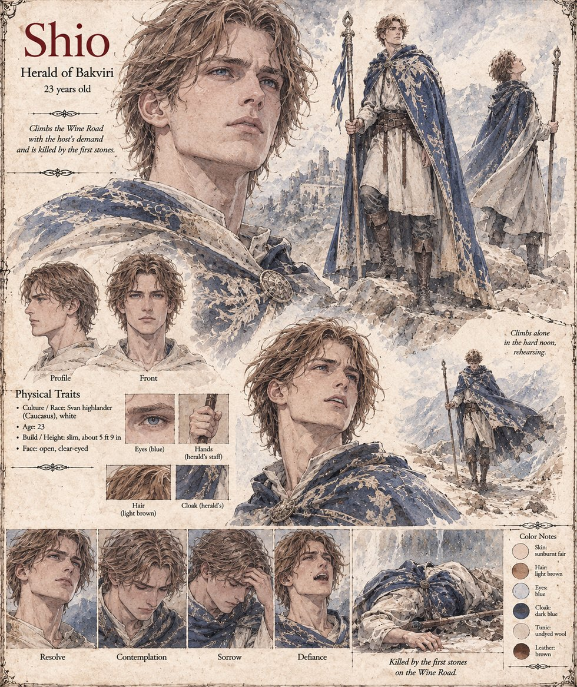

Shio
Herald of Bakviri · carrier of the host’s demand · 23
On the twenty-eighth of Iverin the Elara host comes down the Wine Road and deploys on the dry clay of the unripe vineyards south of the city, seven thousand vintners with their ropes on their shoulders, and sends a herald, as the custom requires: a young man of Bakviri named Shio, twenty-three, who had been chosen for the errand because he had a clear voice and a spotless reputation and a wife eight months with child. He carries the demand in his head, having been told that a written one might be torn up: the bow to be returned to the Council; the Sword’s guard withdrawn from the Hall; the Warden of Ormeli’s voice struck from the roll; and the Mother’s vintage, in some manner that no one has been able to specify, restored. He climbs the Wine Road alone, in the hard noon, rehearsing it, and thinking as he climbs of the wine for his child’s naming, which he has promised his wife will be of the Bakviri vintage, and which this year there is no way to make; and it had occurred to him that if he delivered the demand well there might be.
On the wall above the Hall’s gate the king watches him come, with the bow in his left hand and Orsani’s arrow in his right. He does not hear the herald out. He has read the demand in the herald’s walk before the young man is within a hundred yards and knows that it would be reasonable, and that if it were spoken aloud, in a clear young voice, in the noon, he would be obliged to consider it. He could not afford to consider it, and he draws. A single grey ceiling is drawn across the noon sky in the time it takes to say a name, and the first stone strikes the Wine Road in front of the herald with the sound of a dropped plate. Shio stops and looks up. He sees the whole slope behind him, where the vintners stand in their ranks, begin to come apart, and the pennant of Bakviri go down, and he thinks, with the absurd, unbearable composure of the very young, that he has left the demand unspoken, and that it would be unkind to the others. The second stone takes him in the temple. He had been thinking of the wine for the naming. He would have been glad, he found in the last moment, of vinegar.
The manuscript gives his age of twenty-three, his valley, his voice, his reputation, the demand, the wife and the end. The sheet’s slim build of about 5 ft 9 in, open, clear-eyed face, blue eyes, light brown hair, sunburnt fair skin, undyed wool tunic, dark blue herald’s cloak with a round brooch and herald’s staff are its own, as are its panels Resolve, Contemplation, Sorrow and Defiance. Its scenes, Climbs alone in the hard noon, rehearsing and Killed by the first stones on the Wine Road, follow the manuscript, though the manuscript has the second stone, not the first, strike him down.
“He would have been glad, he found in the last moment, of vinegar.”